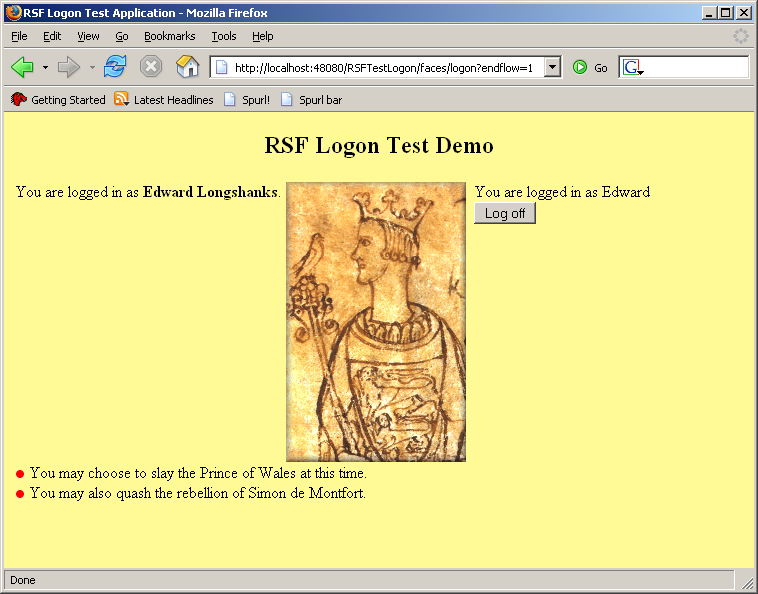
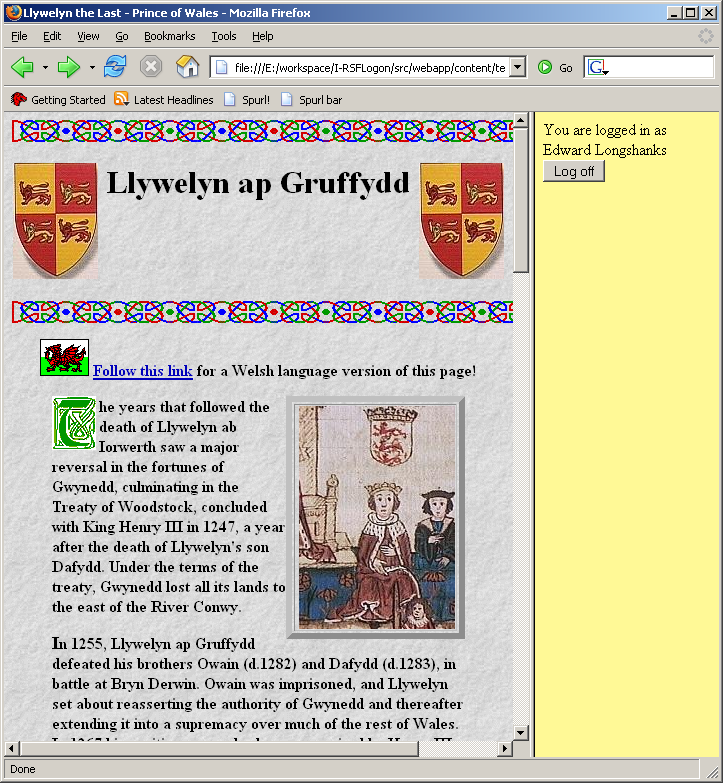

Front page view#
Having worked out the framework-free definitions for the business function of our app[1], we need to define a view that will let the user interact with it. Since I am so rotten at HTML (ironic, given how strongly RSF is pitched towards unlocking the latent power of a world of expert HTML developers), we will use a simple table-based view, with a logon control at the right, and a panel at the left that will display different state depending on whether the user is logged in or not. This will form an RSF view with a viewId of logon. The complete ViewProducer is held in SVN here for reference - we will look at the code piece by piece.
for reference - we will look at the code piece by piece.
Logon control#
Firstly, the logon control itself - note that since this has the request-scope LogonBean injected, this entire view producer needs to be declared at request scope in requestContext.xml.
public class LogonProducer implements ViewComponentProducer, DefaultView {
private LogonBean logonbean;
public void setLogonBean(LogonBean logonbean) {
this.logonbean = logonbean;
}
public void fillComponents(UIContainer tofill, ViewParameters viewparamso,
ComponentChecker arg2) {
if (logonbean.name == null) {
UIBranchContainer.make(tofill, "content-not-logged-in-pane:");
UIBranchContainer notlogged = UIBranchContainer.make(tofill,
"login-not-logged-in-pane:");
UIForm form = UIForm.make(notlogged, "basic-form");
UIInput.make(form, "login-user", "#{logon.name}");
UIInput.make(form, "login-password", "#{logon.password}");
UICommand.make(form, "login-login", null, "#{logonAction.logon}");
}
...
The first make line simply emits a branch container (named "content-not-logged-in-pane:") to show some generic static content in the left content pane when the user is not logged in. The rest of the logic above builds up the controls for the login panel, for which the HTML (from logon.html) is as follows:
<div rsf:id="login-not-logged-in-pane:">
<form action="#" rsf:id="basic-form">
<table>
<tr>
<td>User ID:</td>
<td><input type="text" rsf:id="login-user"></input></td>
</tr>
<tr>
<td style="padding-top: 5px">Password:</td>
<td style="padding-top: 5px"><input type="password"
rsf:id="login-password"></input></td>
</tr>
<tr>
<td><input type="submit" value="Log on"
rsf:id="login-login" /></td>
</tr>
</table>
</form>
</div>
An important point to note here is how RSF does not require any kind of "custom control" to deal with the hidden password which is backing login-password. Given the enormous power of parachute rendering supplied by IKAT, we can simply write this control in standard HTML (<input type="password">) and rely on IKAT not to destroy it, unlike the renderers of all other frameworks. It's this sort of ability that leads to the extremely low requirements for new RSF components at the renderer level. Reusable RSF "components" are instead mostly defined at the ViewProducer level as will now see.
Logoff control - a custom RSF "component"#
Whilst the logon control can only appear at the front page, we imagine that the logout control will be repeated throughout our hypothetical app. Whilst other frameworks would require us to create some kind of "component" for this, implementing some blasted framework interface and conforming to its crazed lifecycle semantics &c, in RSF this "unit of reusable UI space" is simply a normal Spring bean. Since we are injecting it into a known set of consumers, we are free to give it any interface we like, so long as it can be passed the correct container to place its controls. In fact, since we are not imagining any substitutability for this "component" right now, we will not bother to give it any interface at all, but simply inject it concretely. It would be very easy to alter this somewhat crass design decision later - enter LogoffProducer:
public class LogoffProducer {
public void fillComponents(UIContainer tofill, String username) {
UIBranchContainer logged = UIBranchContainer.make(tofill,
"login-loggedin-pane:");
UIOutput.make(logged, "login-user", username);
UIForm form = UIForm.make(logged, "basic-form");
UICommand logoff = UICommand.make(form, "login-logoff");
// rather than just clear the fields from "LogonBean", completely remove
// its storage from the session.
logoff.parameters.add(new UIDeletionBinding("#{destroyScope.logonScope}"));
}
}
The interesting part of this producer is the deletion binding which is attached to the "log off" button - this will clear the contents of logonScope (which is only our logonBean, declared above) from the session state. See the explanation of RSF scoped beans for more details.
The only context required for this bean to operate in addition to the target container is the LogonBean containing the name of the currently logged on user, and so it requires no Spring configuration and may be declared in applicationContext.xml[2]
<bean id="logoffProducer"
class="uk.org.ponder.rsf.testlogon.producers.LogoffProducer" />
Logged on view#
If the user is logged on successfully, as well as being shown the logoff control above, they will be shown some different content in the left pane of this view (this is the end of the body from LogonProducer:
else {
UIBranchContainer pane = UIBranchContainer.make(tofill,
"content-logged-in-pane:");
UIInternalLink.make(pane, "waleslink", new SimpleViewParameters(
WalesFrameProducer.VIEW_ID));
logoffproducer.fillComponents(tofill, logonbean.name);
}
The only non-static content of the left pane is a link to a 2nd page of our app, that can only be shown by a logged on user.

A second view#
The link in the above branch leads to a "protected" view (with ID wales) that can only be seen by authenticated users. The producer for this view will have the same LogonBean instance injected into it as the logon view, demonstrating that the bean value has been persisted across the requests:
<bean id="walesFrameProducer"
class="uk.org.ponder.rsf.testlogon.producers.WalesFrameProducer">
<property name="logonBean" ref="logon" />
</bean>
This view will actually be an HTML frameset which will display the contents of an external URL in the left pane, together with the same logoff control we wrote earlier in the right pane. Much like the hidden password control above, this view again shows off why it is that RSF requires so few dedicated framework-level components - rather than a bulky or even impossible UIFrameset and UIFrame control, we can render these controls again with the standard UILink or UIInternalLink together with parachute rendering. These controls will actually peer with any HTML component which holds a single URL, for example <a>, <img>, <script>, <frame> etc.
The frameset consists of only one non-static link, so the producer looks as follows:
public class WalesFrameProducer implements ViewComponentProducer {
public static final String VIEW_ID = "walesframe";
private LogonBean logonbean;
public String getViewID() {
return VIEW_ID;
}
public void setLogonBean(LogonBean logonbean) {
this.logonbean = logonbean;
}
public void fillComponents(UIContainer tofill, ViewParameters viewparams, ComponentChecker checker) {
if (logonbean.name == null) {
throw new SecurityException("Cannot view page 'wales' while not logged on");
}
else {
UIInternalLink.make(tofill, "wales", new SimpleViewParameters(WalesProducer.VIEW_ID));
}
}
}
Note that as well as rendering the single link with RSF ID wales, this producer also performs a security check. If the user is not logged on, an exception is thrown, which by default will cause a redirect to the default view.
The core HTML for the frameset looks like this:
<html xmlns:rsf="http://ponder.org.uk.rsf"> <head> <title>Llywelyn the Last - Prince of Wales</title> </head> <frameset cols="80%, 20%"> <frame src="http://www.castlewales.com/llywel2.html"/> <frame src="wales.html" rsf:id="wales"/> </frameset> </html>

Logoff action - getting maximum value from RSF defaults#
It's worth noticing that we declared no navigation rules for the command links in the LogoffProducer above. Having seen the code inside WalesFrameProducer, we can see that we have been a little slimy, in allowing default RSF semantics to do the work for us. The default navigation semantics for a command link will cause a redirect to the same view. However, a rendering of this same view after we have logged off will throw the PermissionException we just saw earlier. And the default RSF semantics for an exception thrown from a ViewProducer are to cause a redirect to the default view. All of these reasonable defaults conspire to give us the behaviour we would want without any work - when the user logs off, they will be automatically redirected to the logon page on the default view.Test it out#
Take the app for a test drive (install by editing project.properties to point to your webapp container, type maven for the project and it will auto-install). Log in to the right panel with user Edward and password Longshanks and you will see the content change in the left pane. You can then use the navigation link in the content pane to take you to the protected frameset, and then log off to be redirected to the default view.Although our app appears to perform well, it could be better designed in a few respects. In particular in the next section we will see that it suffers from a serious security issue.
Head - LogonTest
Page 1 - Core Business logic
Page 2 - Defining the views
Page 3 - Digging deeper - BeanGuards and Bracketers
[#2]Actually since it has no dependencies we could go further and simply construct this producer using new where it was required, but this would be the sort of extremely bad style that would only be recommended by the designers of non-IoC based frameworks such as Wicket. Just because we can see that LogoffProducer has no dependencies now doesn't mean that it will have none in the future, and any additional ones it requires may be added silently in the Spring file and in its definition without disturbing the code in any of its consumers. This is the feature that leads apps designed using Spring and RSAC to be far more stable in the face of change than those built without IoC in mind, as well as being more testable and easier to understand.
Add new attachment
Documentation
Developers
Javadocs
Designers
Sample RSF Apps
Presentations
Acronyms
Downloads
Current Release
Trunk
Distributions
Old Versions
Community
Q&A
Forums
Mailing Lists
Issue Tracker
People
Design
Roadmap
Integrations
Concepts
Philosophy